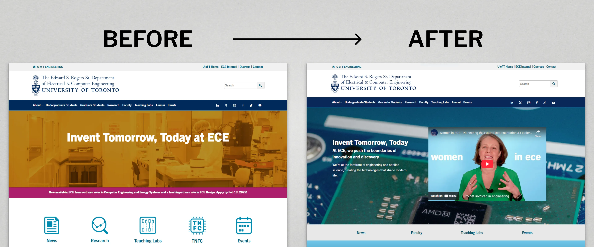
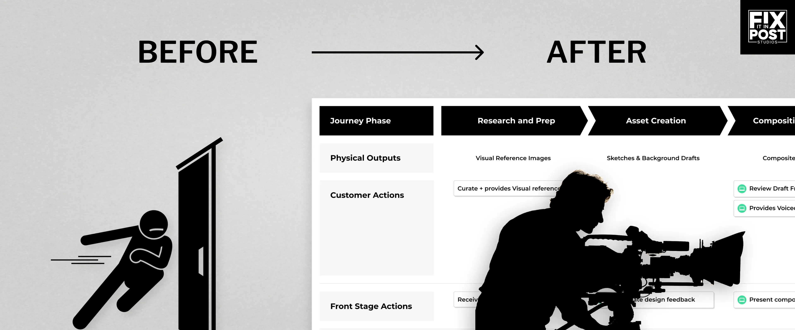

My collection of research-driven design projects across web and mobile.
Web Design

Shipped Jan 2025 • UI-UX/Web Dev · Education
Homepage Redesign: University of Toronto, ECE Department
See how I made the homepage more useful for its visitors and visually consistent with the rest of the site and the organisation.

Shipped Aug 2021 • UI-UX/Web Dev · Creative Industries
Pitch Deck Website for Film Fundraising
Explore my thinking behind turning a PPT pitch deck into a fully functional website with music, visuals, and interaction-based systems design.
Related Content
September 29, 2025 • UI-UX/Web Dev · Education
Website Production Design: University of Toronto, ECE Department
Mobile Design

Study Conducted Oct-Dec 2023 • UI-UX/Mobile · Public Sector
Mobile App for Ticket Deals: Product Research & Design
Discover the UX/Product design decisions behind our creation of a mobile app to source and share museum ticket deals.
Related Content
November 8, 2025 • UI/Mobile · Fintech
NFC Payment App: Concept Design
UX Research and Strategy

Study Conducted Oct-Nov 2023 • UI-UX/Web · Public Sector
Information Architecture Redesign & Implementation Strategy: Textile Museum of Canada
See how the website's IA was restructured to attract newer visitors and improve information access, as well as my thinking behind crafting an implementation strategy that accounts for existing user's mental models.

Implemented July 2023 • Service Design · Creative Industries
Gen-AI Service Blueprint for Film Pre-Visualization
Learn how I used Adobe GenAI (beta version, May 2023) in a successful pilot project to speed up pre-visualization video workflows.
Related Content
March 30, 2024 • UX · Public Sector